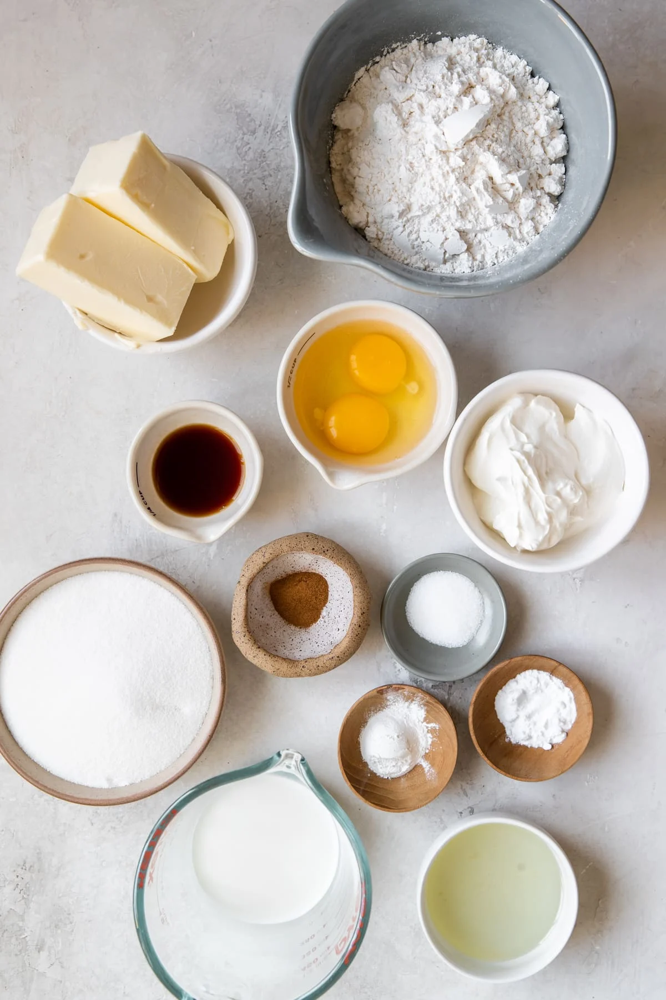

Ingredients
Brown Butter Topping
- 1 stick unsalted butter
- ¾ cup granulated sugar
- ¼ teaspoon kosher salt
- ½ cup all-purpose flour
- 1 tablespoon ground cinnamon
Filling
- 1 cup brown sugar
- 1½ tablespoons ground cinnamon
Cake Batter
- 1 ¼ cups whole milk
- ¾ cup sour cream, or full-fat plain yogurt
- 3 ¾ cups all purpose flour
- 1 ¼ teaspoons kosher salt
- 2 ½ teaspoons baking powder
- 1 ½ sticks unsalted butter, softened
- 1 ½ cups granulated sugar
- ⅓ cup brown sugar
- 1 tablespoon vanilla extract
- 3 large eggs

Instructions
Prep
- Preheat the oven to 350°F (180°C).
- Lightly grease a 9 x 13-inch baking dish or 2 9-inch round cake pans with nonstick spray.
Making the Brown Butter Topping
- Add the butter to a small light-colored saucepan over medium heat.
- Swirl the pan occasionally until the butter completely melted, then continue cooking, swirling or stirring with a heatproof spatula occasionally, until the butter bubbles and foams, then begins to brown as the foam subsides.
- Once the butter is golden brown and smells nutty, 5–8 minutes total, transfer to a heatproof container (make sure to get all the delicious browned bits from the bottom of the pot) and let cool to room temperature for 5–10 minutes before using.
- In a medium bowl, whisk together the sugar, salt, flour, and cinnamon.
- Add the browned butter and stir with a rubber spatula until well combined.
Making the Filling
- In a small bowl, mix together the brown sugar, and cinnamon.
Making the Cake Batter
- In a liquid measuring cup or medium bowl, whisk together the milk and sour cream until well combined.
- In a medium bowl, whisk together the flour, salt, and baking powder until well combined
- In a large bowl, cream together the butter, granulated sugar, and brown sugar with an electric hand mixer on medium speed until light and fluffy, 2–3 minutes. Add the vanilla, then the eggs, 1 at a time, beating well after each addition.
- Add a third of the flour to the butter mixture, beating on low speed to combine. Add half of the milk mixture and beat to incorporate. Continue alternating between the dry and wet ingredients, beating between each addition just to incorporate before adding the next. Do not overmix.
- Pour half of the batter into the prepared baking dish and spread all the way to the edges. (If using 2 9-inch round pans, spread about 1⅓ cups batter in each pan.) Sprinkle the filling evenly over the batter. Spread the remaining batter on top of the filling, all the way to the edges of the pan, then use a butter knife to gently swirl the filling into the batter. Crumble the streusel evenly on top.
- Bake the coffee cake until dark golden brown around the edges and a toothpick inserted in the center of the cake comes out clean, 55 minutes for a large pan or 50–55 minutes for 2 smaller pans.
- Remove the cake from the oven and let cool for 20 minutes before slicing and serving straight from the pan. If leftovers remain, wrap in foil and place in refrigerator up to a day or two.